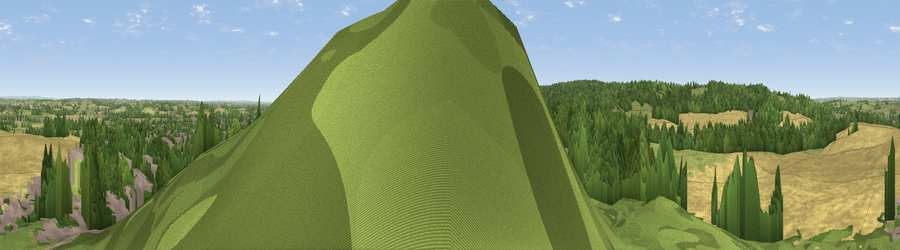

Viewpoint near Slitting Mill
#25708 in England · top 26% of its area beats it · near Slitting MillWhere it is
The exact computed spot (SK 02775 18775). Click the marker for map links.
The view, rendered

A 360° render of this exact spot computed from the terrain model, tree cover and land cover — summer colours, afternoon light, calibrated against photographs of famous viewpoints. Real trees, hedges and buildings will differ in detail.
The panorama
Grey silhouette: terrain skyline in each direction (720 bearings, Earth curvature and refraction included). Dashed green: skyline with trees (+15 m) and buildings (+8 m) as obstacles. Blue strip: how far the ground is visible on each bearing.
Where the view opens
Wedge length = distance to the farthest visible ground on that bearing (vegetation-aware). Rings at 10, 25 and 50 km.
What fills the view
33% woodland · 31% cropland · 20% grassland · 15% built-up
Angular shares of the visible panorama (visual magnitude), not map area. Landscape diversity 0.58 (0–1 Shannon).
Key numbers
More beautiful places nearby
The staircase of upgrades: each row has a higher view potential than everything closer. Driving times are estimates from straight-line distance, calibrated against real road routing — check an actual route before setting out.
| Place | Direction | Drive | Score |
|---|---|---|---|
| Viewpoint near Bishton | NW · 2 km | ~5 min | 51.7 |
| Viewpoint near Upper Longdon | SSE · 5 km | ~10 min | 55.9 |
| Wimblebury Hill | S · 7 km | ~15 min | 60.9 |
| Viewpoint near Streetly | S · 21 km | ~36 min | 69.5 |
| Viewpoint near Wootton | NNE · 28 km | ~45 min | 74.4 |
| Viewpoint near Wootton | NNE · 28 km | ~45 min | 74.8 |
| Tissington Hill | NNE · 36 km | ~55 min | 75.5 |
| The Ercall | WSW · 39 km | ~58 min | 79.4 |
52.76657, -1.96031 · source: screening · position refined by local search. Computed location — check access rights before visiting.